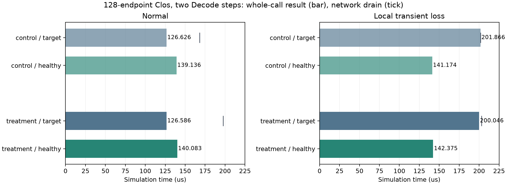
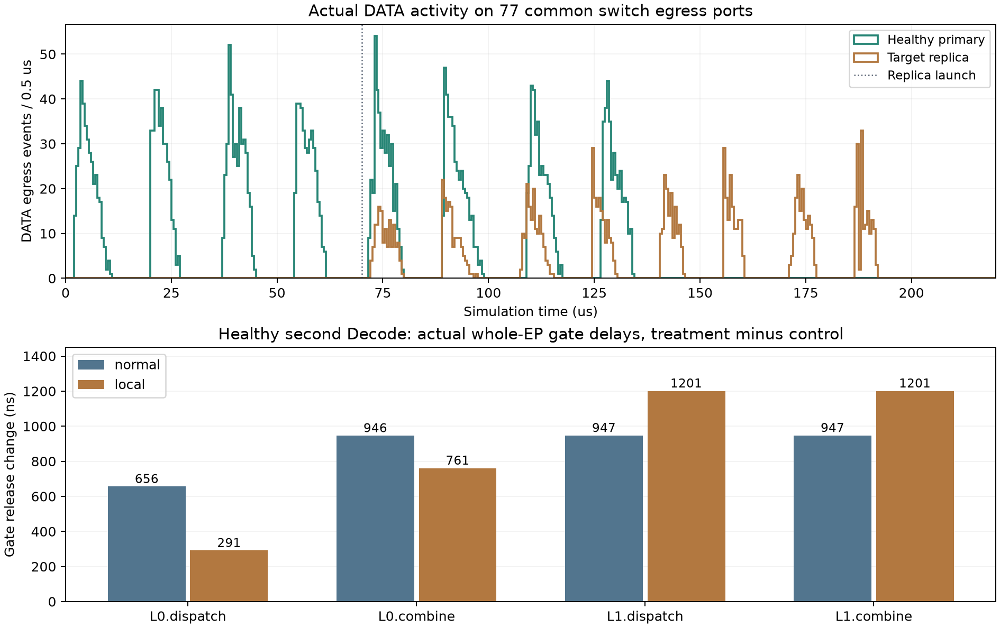

2026-10-30 · 128端点Clos · 15份不同原件 · 连续两个Decode步
备用只让故障任务少等1.820微秒，却让健康任务多等1.201微秒
上一轮单步任务没有暴露干扰。这次补齐完整备用的多步执行，使每个任务按真实前一步完成继续推进。固定两步对照中，额外备用流量确实与健康任务重叠，并沿通信阶段依赖传成了完成延迟。
−0.90%故障目标任务等待
+0.85%健康任务等待
+27.51%两任务总有效通信
先明确任务和场景
同一128端点Clos、四组EP32。目标4份、健康11份R1-AWQ/MMLU专家选择原件，各回放原层3/4、从首Decode入口起连续两步。第二步使用原件下一条专家选择，不复制第一步；只有实际前步完成才提交后步，整个两步结束才交付结果。
normal不人为注入故障；local只在前20微秒丢到达GPU28的DATA包，本次实际6包，控制包保留。local仍是跨服务器网络。两个场景使用同选择性重传与参考DCQCN。
control：目标与健康备用门槛均4毫秒，实际均未触发；treatment：仅目标门槛改为70微秒。完整专家与等价ready-KV预先存在，所有已启动尝试均执行完并释放资源，不伪造取消。
结果、收尾和代价

故障时目标201.866→200.046微秒，少1.820微秒；健康141.174→142.375微秒，多1.201微秒。网络排空201.866→203.067微秒，晚1.201微秒。两任务总有效载荷11,228,096→14,316,544字节，增加3,088,448字节（27.51%）；总声明计算增加26.37%。
正常时目标仅少40纳秒（0.032%），健康多947纳秒；网络排空晚29.367微秒。两个时间不能相减当经济净收益：两批请求数量不同，也没有吞吐、SLO或机会成本测量。
70微秒沿用上一轮，未按两步任务重新标定；正常两步本来就需要126.626微秒完成目标，因此正常触发备用是这一参数的预期后果。它不是经过当前负载标定的最优或强门槛基线。结果证明这组固定参数下的共享干扰，不能证明成熟备用普遍无效，也不能将调门槛本身称为创新。
干扰怎样传到任务结束

备用70微秒启动，第一包71.030微秒发送、72.211微秒进入交换机。健康任务仍执行第二步，两者经过77个相同出口。4,264次健康包交换机经过逐一配对，无缺失；局部条件单跳驻留最大增加1,093纳秒。
沿健康第二步每个阶段最后到达的真实依赖追踪，四处都落在SEND的源端确认。相对对照，其阶段释放晚291→761→1,201→1,201纳秒：
第一阶段中，消息24113末包源发送时刻相同，但5跳累计驻留增加1,164纳秒，接收与源确认也各晚1,164纳秒；它在对照中原有873纳秒余量，因此阶段仅晚291纳秒。主导依赖从原消息23962切换到24113，不能只盯着原来的最后一条消息。
随后紧约束消息的额外逐跳驻留分别增加470和440纳秒，与此前传播的291纳秒一起形成1,201纳秒。最后Combine没有新增末包驻留，只继承了更晚的发送就绪时间。第一条新紧约束健康包在交换机128出口18等待时，实际有3个备用DATA包先在同出口发送。
健康所有包累计驻留增加96,581纳秒，是多个包的总和，不能当成可优化的任务时延。这里的1,201纳秒来自实际完成对照和必要依赖，而非把累计包等待直接相加。仍不能据此保证某个新策略可回收全部延迟。
本轮系统实现和检查
- 新增显式replication/4：同一ns-3时钟上推进完整多步备用，首步不冒充结果，后续由真实完成驱动，已启动输家继续执行。
- 实际LLMServingSim调度器在中间步保留KV，仅完整执行结束或未启动即跳过时释放；每个attempt记录逐步图与起止时刻，输入身份摘要包含步数。
- 72项不同CPU检查、10份旧网络只读复核通过；正常/局部两份新结果迁移检查通过，16类篡改共32项拒绝。
第一份原生网络成功并排空，但旧检查器把后续图名写死为第0步，导致公开run在后检查返回失败。修复检查器并补复现检查后，对保存原件公开离线核验通过；只补存缺失的verification报告，原文件SHA未变，没有重跑网络。其余三次公开run成功。原生和运行时核心方法未改变，区别与证据见修复记录。
四次实际网络各一次，零构建、依赖修改、下载、安装或GPU执行。两张图已查看，网页资源做静态检查；本机无浏览器，未做浏览器渲染验收。
研究边界与下一步
原4份有已核验固定版本身份，新增11份只有用户确认目录及本机SHA，远端固定修订仍未知；两份缺层文件排除。真实的是专家选择，通信为前端投影和ns-3模拟包，并非运行时抓包。128端点不是128张GPU满载；声明计算与BF16消息布局也不是AWQ模型GPU实测或完整671B部署验证。
这是有限两步片段，仍没有新请求持续到达、生产分布、完整请求、吞吐或经济收益。下一步先建立针对当前完整任务时长的成熟备用门槛与资源预算基线，再研究能否利用已完成步骤、通信阶段进度和共享网络代价减少无效备用。该方向尚待文献对比和强基线验证，没有新的算法收益结论。